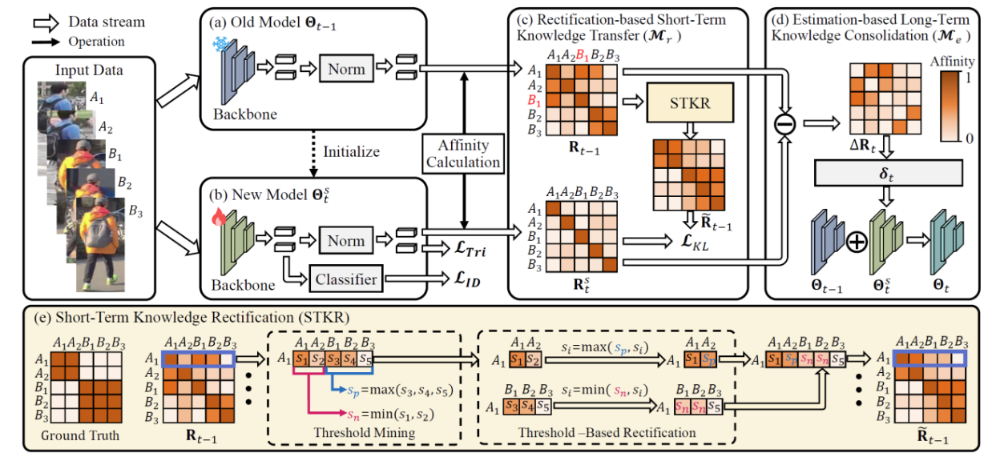

OV³ LAB · PEKING UNIVERSITY
← 返回 Publications 页长短期知识解耦与巩固驱动的终身行人重识别

"Long Short-Term Knowledge Decomposition and Consolidation for Lifelong Person Re-Identification", TPAMI 2025
作者: 徐昆仑(博士生), 刘子宸, 邹旭, 彭宇新, 周嘉欢
通讯作者: 周嘉欢
终身行人重识别任务要求模型能够持续利用新增域数据进行训练, 在学习新域知识的同时, 维持对旧域数据的识别能力。该任务的核心挑战是灾难性遗忘问题, 即模型在学习新域知识后, 对旧域数据的识别性能发生退化。现有方法主要依赖知识蒸馏策略将旧模型知识迁移至新模型, 然而, 此类方法存在三个严重局限: (1)错误知识积累: 受数据偏差等因素影响, 旧模型中不可避免地包含错误知识。知识蒸馏过程会传递并累积这些错误知识, 进而干扰新知识的学习。(2)正确知识遗忘: 新旧域间的分布差异导致部分旧知识无法被新数据激活, 致使这些知识难以通过知识蒸馏有效迁移至新模型。(3)无法自动权衡学习和遗忘: 知识蒸馏约束缺乏与模型性能的直接关联, 难以实现学习新知识与保留旧知识之间的最优权衡。
针对上述问题, 提出了一种长短期知识解耦与巩固驱动的终身行人重识别方法。具体贡献如下: (1)知识纠正机制: 在知识蒸馏过程中, 利用新数据的标注信息纠正历史特征中的错误, 从而缓解错误知识积累问题。(2)知识解耦权衡机制: 将包含长期旧知识的单一模型解耦为长期旧模型与短期旧模型。该机制通过与知识纠正机制协同, 不仅能够提取长短期互补特征以指导新知识学习, 更支撑了最优权衡搜索算法的实现。该算法以新数据作为无偏基准, 自动寻优并指导长短期知识迁移的最优权衡。实验结果表明, 本方法在终身行人重识别数据集LReID上取得了性能提升。
该论文的第一作者是北京大学王选计算机研究所2023级博士生徐昆仑, 通讯作者是周嘉欢助理教授, 与彭宇新教授合作完成。